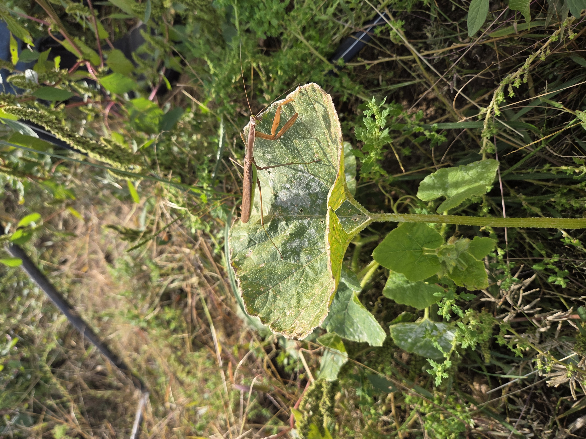

Organic Certification
- Goal
- To verify that a farm follows United States Department of Agriculture organic regulations.
- Overseen by
- United States Department of Agriculture (USDA)
- Requirements
-
Organic operations must integrate cultural, biological, and mechanical practices that:
- Foster the cycling of resources
- Promote ecological balance
- Conserve biodiversity
- Maintain or improve soil and water quality
- Conserve wetlands, woodlands, and wildlife
The following practices or materials may not be used:
- Synthetic fertilizers
- Sewage sludge
- Irradiation
- Genetic engineering
- How to get certified
-
The farm must submit an application to a USDA-accredited certifying agent. The application must include:
- A detailed description of the operation to be certified
- A history of substances applied to the land during the previous three years
- The names of the organic products grown, raised, or processed
- A written Organic System Plan (OSP) describing the practices and substances that will be used
Good Agricultural Practices Certification
Good Agricultural Practices (GAP) certification focuses on practices that reduce food-safety risks during agricultural production and handling.
- Goal
- To minimize microbial food-safety risks.
- Overseen by
- United States Department of Agriculture (USDA)
- Example requirements
-
- Signs remind employees to wash their hands.
- Smoking and eating areas are separated from food-handling areas.
- Agricultural water passes the required water-quality assessment.
- Harvesting materials and equipment are kept as clean as practical.
- How to get certified
-
- Establish a billing account with the USDA.
- Complete the appropriate audit-request form.
- Submit the form to the USDA office closest to the business.
- Prepare for and complete the requested audit.
Food Safety Modernization Act
The Food Safety Modernization Act (FSMA) is a federal law, not a voluntary farm certification.
- Goal
- To prevent foodborne illness by addressing food-safety risks before contamination occurs.
- Overseen by
- United States Food and Drug Administration (FDA)
- Example requirements
-
- Produce-washing stations must be covered.
- Farm workers must be trained to handle produce safely.
- Farm workers must wash their hands before handling produce.